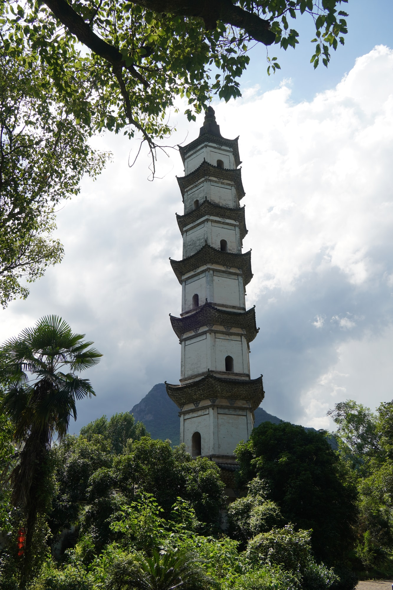
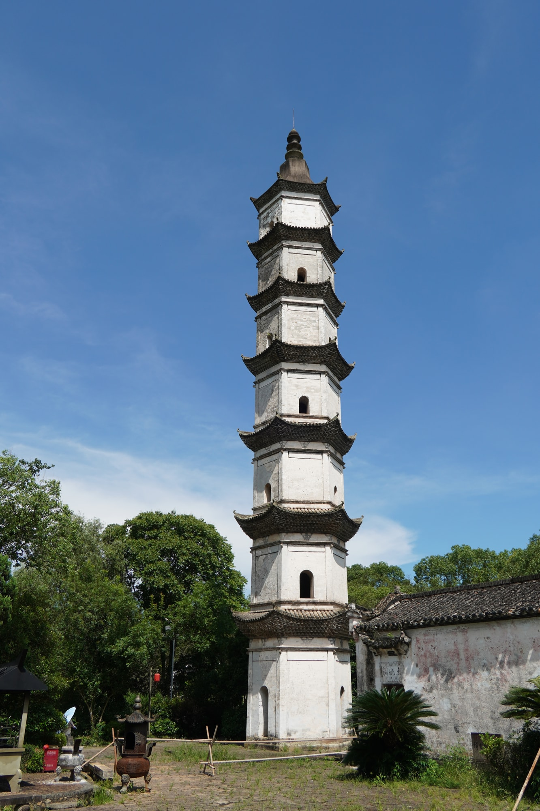

国保古塔
一塔凌云，一村文心抟云塔
抟云塔是全国重点文物保护单位“新叶村乡土建筑”的组成部分。白色塔身高出古村屋脊，在玉华山前形成清晰的轮廓，是进入新叶村时最易辨认的建筑之一。
01
村口并立的塔与阁
抟云塔始建于明隆庆元年（1567年），与文昌阁相邻而立。一塔一阁，一高一低，分别以塔与楼阁的形态回应古村对读书和文运的重视，也让两座建筑成为彼此不可分割的空间组合。
02
塔名里的耕读心愿

“抟云”二字取意于大鹏扶摇而上的意象。在崇尚读书、耕读传家的新叶村，这个名字寄托着族人期望子弟奋发上进、由读书求取功名的愿望，也让一座塔成为古村耕读文化的象征。
03
层层收束的塔身

走近塔前，可以看到八角形塔身逐层向上收束，层层出檐在竖直塔身上形成清楚的节奏。远处山色、近旁院墙与塔身彼此叠合，使建筑既保持向上的挺拔感，也融入古村舒缓的屋顶轮廓。